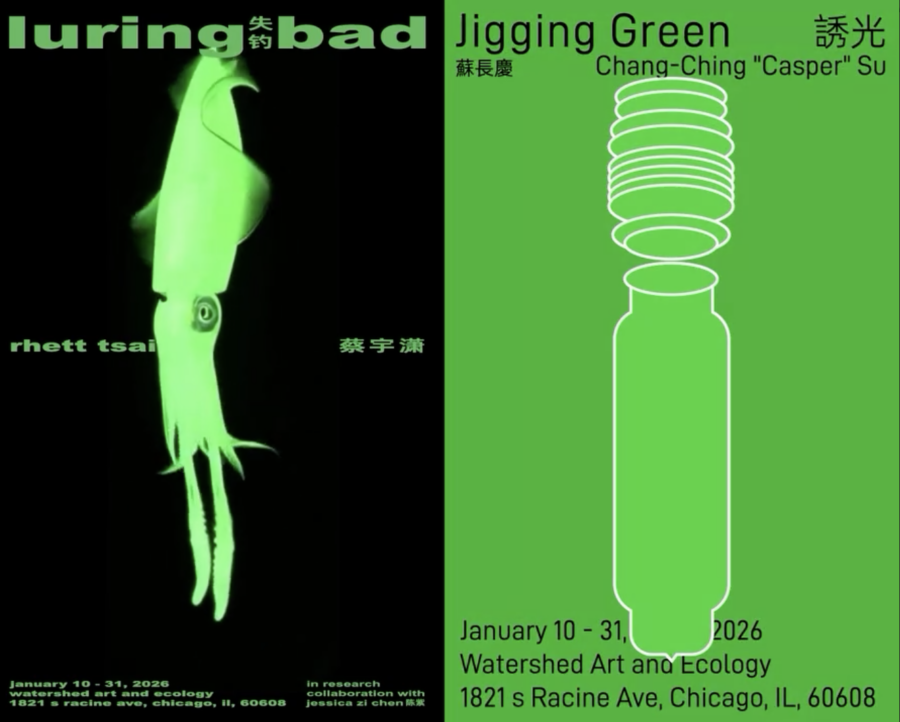

Jigging Green / Luring Bad
Watershed Art & Ecology is pleased to present two bodies of work about the global fishing industry: “Jigging Green” by Chang-Ching Casper Su and “Luring Bad” by Rhett Tsai, in research collaboration with Jessica Zi Chen.
Fishing is a game between the artificial and the natural. From sonic lures to vibration devices, from chemical bait to artificial reefs, humans continually create substitute landscapes and chains of enticement. Across pan-asian waters, light has become one of the most dominant tools of capture. Its intervention does not merely alter the size of the catch, but also disrupts multispecies rhythms, confuses migratory routes, and clouds the sea with heat and noise, transforming the seascape into a zone of exposure and extraction.
Through experimental practices, the three respondents ask: How can we learn to perceive, understand, and cultivate care for coastal and aquatic environments structured by artificial illumination? The ghostly glow draws them back through personal and inherited histories of displacement, memory, and technological mediation. Presented concurrently, their works operate as a contemporary reactivation of the pendant format—two independent bodies of work brought into deliberate proximity so that meaning emerges through resonance, contrast, and reciprocal tension rather than simple formal symmetry.
Opening Reception on 1/10 @2-7pm
Performance @4pm
Maya Nguyen
Fishing Tea Party – a gathering of kettlers, pipers, fishers, and musicians
Che Pai